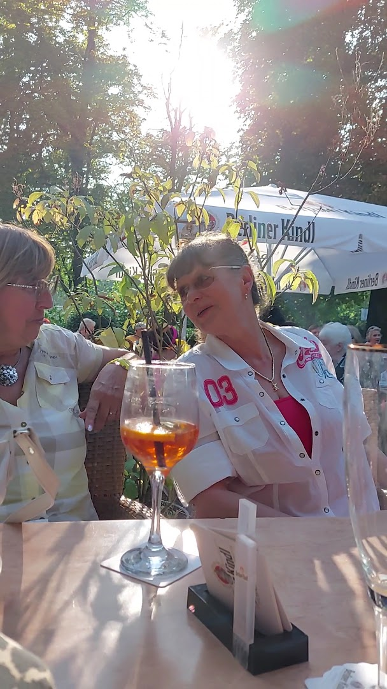

Impressionen
Entdecken Sie unser Cafe und die wunderschöne Lage am Schäfersee



Ihre grüne Oase am Wasser im Herzen Berlins
Genießen Sie traditionelle deutsche Küche, hausgemachte Kuchen und eine große Auswahl an Teesorten mit wunderschönem Seeblick
Das Cafe am See liegt direkt am malerischen Schäfersee und bietet eine einzigartige Kombination aus entspannter Atmosphäre und köstlicher deutscher Küche.
Seit vielen Jahren sind wir eine beliebte Anlaufstelle für Anwohner und Besucher, die die Ruhe am See genießen möchten. Unser gemütliches Cafe serviert den ganzen Tag über - vom reichhaltigen Frühstück über das Mittagessen bis hin zu Kaffee und Kuchen am Nachmittag und einem entspannten Abendessen.
Besonders stolz sind wir auf unsere hausgemachten Kuchen mit fruchtigen Marmeladen und unsere große Auswahl an Teesorten. Ob Sie allein speisen, mit Freunden vorbeikommen oder den Tag am See verbringen möchten - bei uns sind Sie herzlich willkommen!
Vielfältige vegane und vegetarische Gerichte
Täglich frisch gebacken mit Liebe zum Detail
Direkt am Wasser mit herrlichem Ausblick
Ausgezeichneter Kaffee und viele Teesorten
Rollstuhlgerecht zugänglich
Ihr Vierbeiner ist willkommen
Sitzplätze mit Seeblick
U-Bahn Franz-Neumann-Platz
Entdecken Sie unser Cafe und die wunderschöne Lage am Schäfersee
"Lovely atmosphere with a beautiful lake view. The staff is friendly and the service is fast. Fair prices and great location directly by Schäfersee."
"Most guests recommend trying tasty hamburgers and good wiener schnitzels. The homemade cakes are excellent!"
"Great place for breakfast by the lake. The vegan options are delicious and the homemade cakes with fruity jams are a must-try. Wheelchair accessible and pet-friendly!"
Teilen Sie Ihre Erfahrung mit uns!
Bewertung schreibenResidenzstraße 43a
13409 Berlin
Deutschland
Durchgehend warme Küche
U-Bahn: Franz-Neumann-Platz (92m entfernt)
Bus: Mehrere Linien in der Nähe
Auto: Parkplätze in der Umgebung verfügbar
Wir freuen uns auf Ihre Nachricht